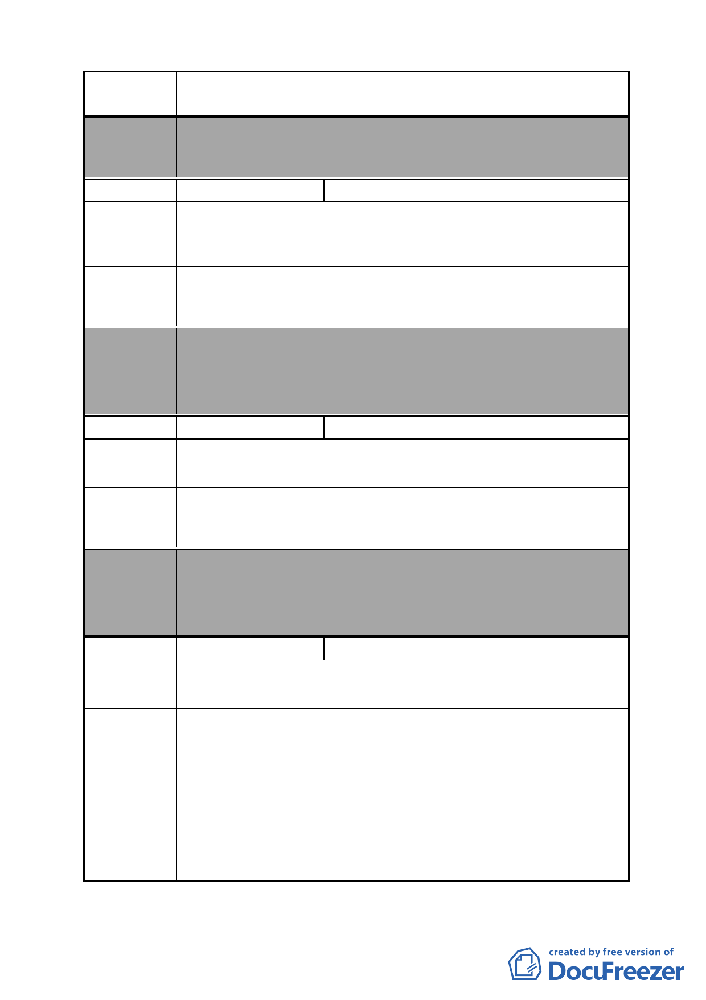

案 名 變更臺北市南港區鐵路地下化沿線土地主要計畫案
委員會 本案除文字誤繕應再作修正外，其餘依市府本次會議所送修
決議 正計畫書內容通過。
編號
陳情理由
建議辦法
31 陳情人 廖信華
陳情地點南港區南港路 2 段 23 巷 15 號。
此房避風躲雨住了 40 餘年，是我辛苦賺來的，今要拆除，我
80 餘歲老人何處安身。米珠薪桂生活艱難，誰與憐之。
市府建設房子可以分給我住。市府給我一條路走，表示政府
仁政。
委員會
決議
編號
陳情理由
建議辦法
本案除文字誤繕應再作修正外，其餘依市府本次會議所送修
正計畫書內容通過。
（依市府本次會議所送修正計畫書，本案陳情地點因位於計
畫區 D 街廓內，故仍予納入市地重劃範圍）
32 陳情人 葉俊家
1.不同意以重劃方式辦理變更為商業區。
2.應說明對本區（編號 D）開發方式及細部計畫內容。
1.政府公辦更新為商業區，由土地所有人回饋給市府。
2.針對本區就細部計畫再辦說明會。
委員會
決議
編號
本案除文字誤繕應再作修正外，其餘依市府本次會議所送修
正計畫書內容通過。
（依市府本次會議所送修正計畫書，本案陳情地點因位於計
畫區 D 街廓內，故仍予納入市地重劃範圍）
33 陳情人 李珮瑜
陳情理由
建議辦法
1.敬請將 C 區內向陽路 84 號至 110 號建物及土地剔除，不納
入重劃範圍內。
2.敬請將 C 區變更為住商混合區（向陽路 84 號至 110 號建物
及土地除外）。
3.敬請市府於 C 區不興建大型公園作為「北部流行音樂中心」
之發展腹地；而以住商混合區作為「北部流行音樂中心」之
發展腹地。
4.敬請市府重新評估檢討「北部流行音樂中心」一案。
- 40 -